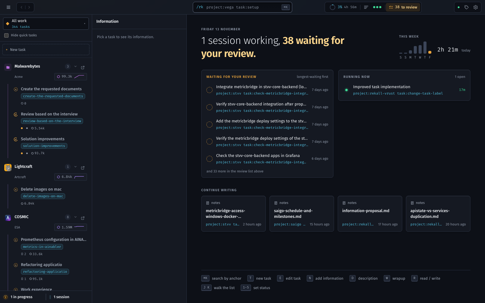
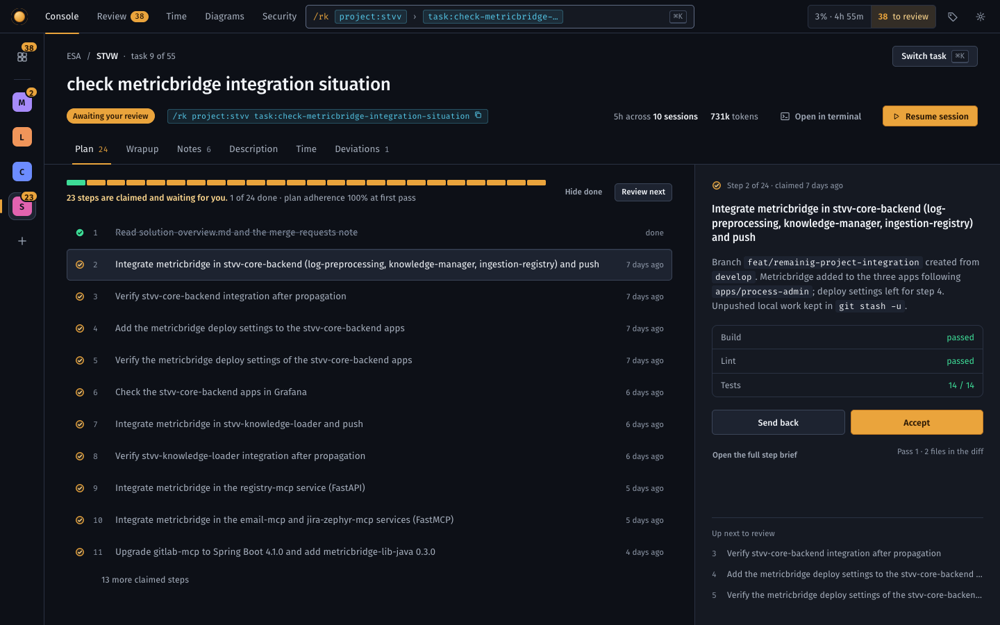
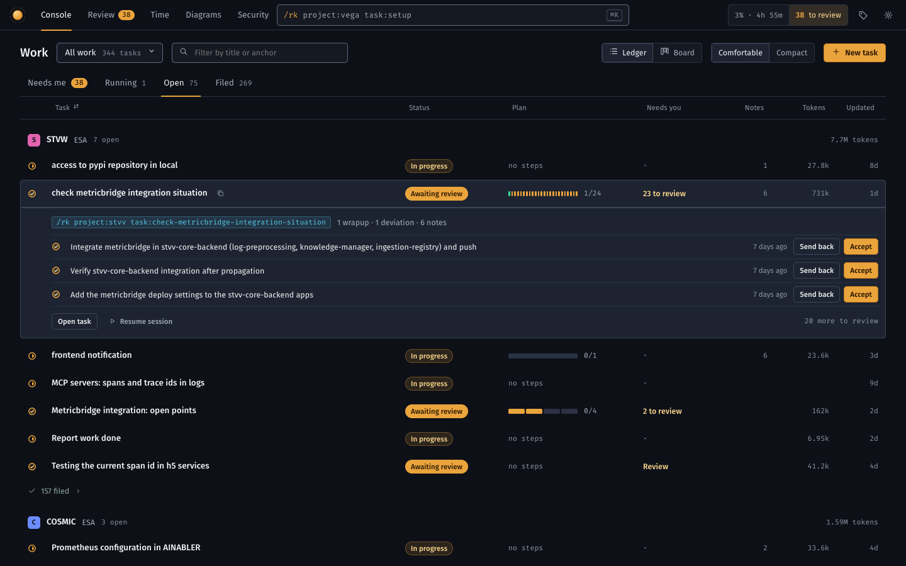
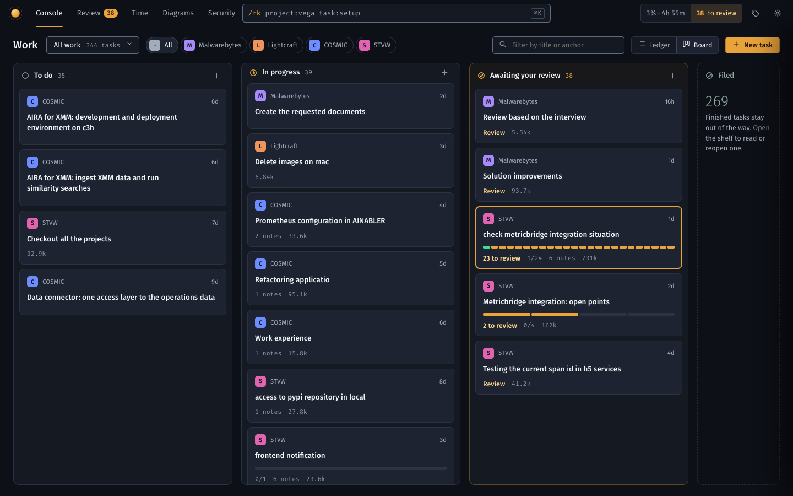

Rekall console: three alternatives to the three columns
Today the navigator row carries about ten signals (pip, session mark, tag, anchor, epic, steps, drafts, review dot, wrapup, notes, skills, tokens) and the middle column stacks six cards, so three panes compete at once. In all three, a list row keeps a mark, a title and one thing that needs the person; everything else is one click away. Same palette, type and tokens as the console; real demo data. Nothing in rekall-ui was touched.

Navigator, task info, workspace
The task list is always on screen, 300px wide, with two-line rows and a stacked info column beside it. Selecting a task opens a fourth thing (the note) in the remaining space.

Desk: the task is the page
No list column. A 64px rail holds projects with their review counts; the task fills the screen with tabs (Plan, Wrapup, Notes, Description, Time, Deviations), and ⌘K or "Switch task" summons the list when you want it.
- Reviewing is the main verb: a decision panel on the right shows the claim, its checks, Accept and Send back, and what is next.
- Six stacked cards become tabs.
- Cost: you no longer see sibling tasks at a glance.

Ledger: one wide, sortable table
Tasks grouped by project in columns: status, plan progress, what needs you, notes, tokens, updated. The selected row opens inline with its first claimed steps and Accept in place, so the common review needs no page change.
- Scans fastest and sorts; the anchor appears as a copy button on hover.
- Finished work collapses to one "157 filed" line per project.
- Cost: a denser, more spreadsheet feel.

Board: lanes by state, detail in a sheet
To do, In progress, Awaiting your review, Filed. A card is a project mark, a title, plan progress and one footer line. "Awaiting your review" is its own amber lane, which is the control loop made visible. A card opens a 600px sheet over the board and Esc closes it.
- Shows the whole pipeline and where it jams.
- Cost: long lanes scroll, and ordering inside a lane needs a rule.